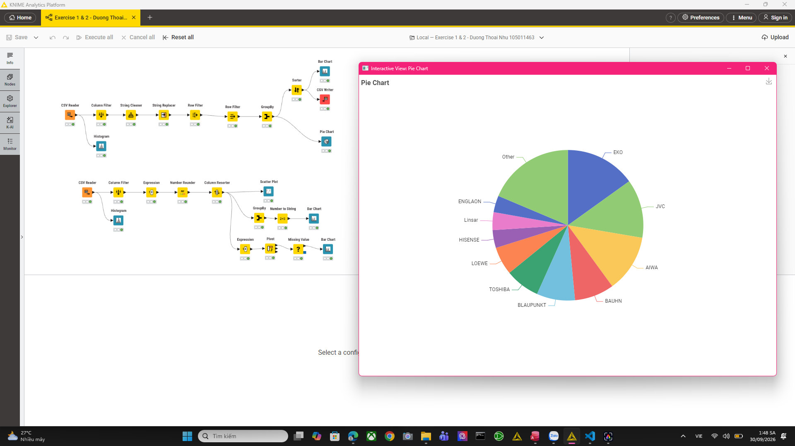
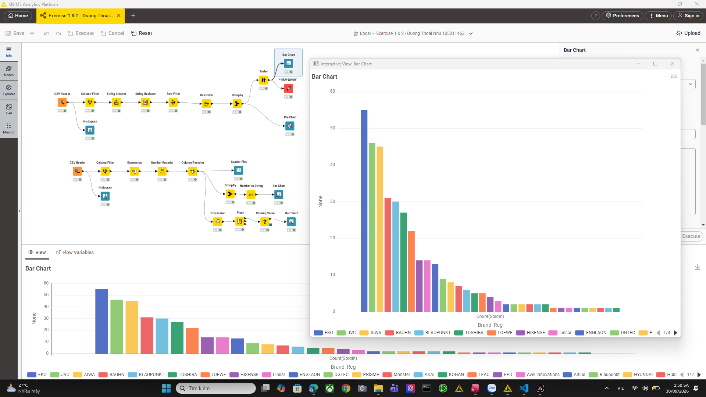

TV Insights
Based on the Australian market data, here is an analysis of how TV brands, sizes, and screen technologies impact your energy choices.
Top TV Brands
Our analysis shows that certain brands dominate the Australian market in terms of available models. This gives consumers a wide variety of choices, but also requires careful consideration of energy ratings.

Size vs. Energy
As expected, larger screens consume significantly more power. If you are looking to save on electricity, choosing a small or medium TV over a large one makes a huge difference.
